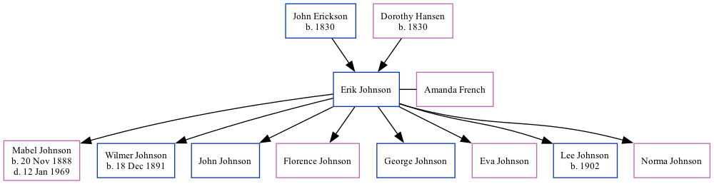

Erik Johnson 1859 -
[ Home ] | [ Surnames Index ] | [ Family History ]The child of John Erickson and Dorothy Hansen, , Erik is the three times great-uncle of Stephanie Hardesty (née Teten), was born in Oppland, Norway1,2,3 and married Amanda French (with whom hehas had 8 children: Mabel, Wilmer Horatio, John M, Florence N, George D, Eva Irene, Lee and Norma) in 18841.
During his life, he was living in Garfield, Sioux, Iowa in 19001 and in 19102; in Hudson, Lincoln, South Dakota in 19203; and in Hudson, Lincoln, South Dakota, USA in 1931.
Parents
- John was born in 1830
- Dorothy was born in 1830
Children
- Mabel was born on Nov 20, 1888
- Wilmer Horatio was born on Dec 18, 1891
- John M
- Florence N
- George D
- Eva Irene
- Lee was born in 1902
- Norma
Citations
- 1900 United States Federal Census Ancestry.com Operations Inc (Age: 40; Marital Status: Married; Relation to Head of House: Head)
- 1910 United States Federal Census Ancestry.com Operations Inc (Age in 1910: 50; Age in 1910: 50; Marital Status: Married; Relation to Head of House: Self; Relation to Head of House: Head)
- 1920 United States Federal Census Ancestry.com Operations Inc (Age: 60; Marital Status: Married; Relation to Head of House: Head)
Family Tree
Data (GEDCOM) maintained by Jay Weston Hannah, Omaha, Nebraska, USA.
Website generated by ged2site. Last updated on Jun 18, 2024.